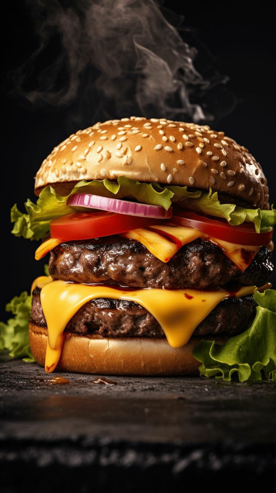

Classic Burger Recipe
This delicious and juicy classic burger is perfect for a quick lunch or dinner, packed with flavor and customizable toppings.
Preparation Time
- Prep: 15 minutes
- Cooking: 10 minutes
Ingredients
Burger Patty
- 1 lb ground beef (80% lean)
- 1/2 tsp salt
- 1/4 tsp black pepper
- 1/4 tsp garlic powder
- 1/4 tsp onion powder
For Assembly
- 4 burger buns
- 4 slices of cheese (optional)
- 4 lettuce leaves
- 1 tomato, sliced
- 1/2 onion, sliced
- Pickles, as desired
- Ketchup, mustard, mayonnaise (optional)
Instructions
- Prepare the Patties: In a bowl, mix ground beef with salt, black pepper, garlic powder, and onion powder. Divide into four equal parts and shape into patties.
- Cook the Patties: Heat a grill or skillet over medium-high heat. Cook the patties for 3-4 minutes per side or until cooked to your preferred doneness. Add cheese slices on top of the patties in the last minute of cooking if desired.
- Toast the Buns: Lightly toast the burger buns on the grill or in a skillet until golden.
- Assemble the Burgers: Spread condiments (ketchup, mustard, or mayonnaise) on the buns. Place a lettuce leaf on the bottom bun, followed by a patty, tomato slice, onion rings, and pickles. Top with the other half of the bun.
- Serve hot and enjoy your homemade classic burger!
Nutrition
| Calories | 400 kcal per burger |
|---|
| Protein | 20g |
|---|
| Carbs | 30g |
|---|
| Fat | 22g |
|---|